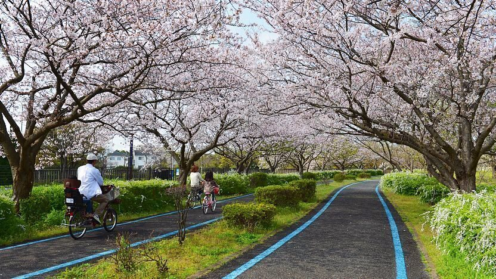
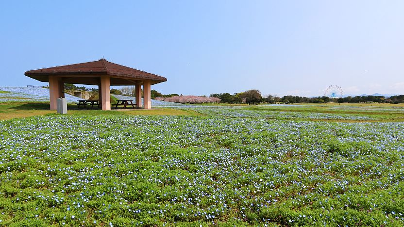
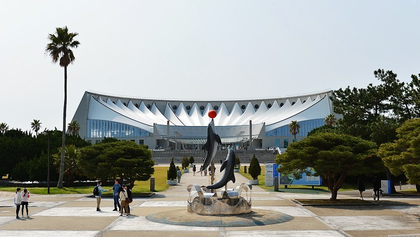

Uminokamichi Seaside Park
海の中道海浜公園
Uminonakamichi Seaside Park (海の中道海浜公園, Uminonakamichi Kaihin Kōen), is a sprawling, family-oriented park located on a narrow peninsula across the bay from central Fukuoka. The park is made up of several different areas including flower gardens, playgrounds, sports fields, a water park, a zoo and large open spaces and lawns perfect for picnicking.
Uminonakamichi Seaside Park measures nearly four kilometers from end to end, and many visitors will find it too expansive to cover on foot. To make the park more easily explorable, there is a network of cycling trails, and bicycles can be rented at the entrance gates for 500 yen per three hours or 700 yen per day. Alternatively, a bus operates between the park's major sites during spring and autumn and costs 200 yen per ride or 300 yen for a day pass.
Uminonakamichi Seaside Park is also a popular place for flower viewing, with millions of flowers planted around the different areas of the park including narcissus, tulips, nemophila, roses, hydrangeas, sunflowers and cosmos among others. The flowers are in bloom at different times of the year, with most blooming sometime between mid March and early autumn.
In addition, there are about 2000 cherry trees planted around the lawns and along the cycling trails, which form beautiful cherry blossom tunnels when in bloom and make Uminonakamichi Seaside Park one of the city's popular cherry blossom spots. The trees are mostly of the Somei Yoshino and Oshima varieties and typically bloom from late March to early April.
A short walk across the train tracks from Uminonakamichi Seaside Park stands the Marine World Uminonakamichi, an aquarium which focuses on the aquatic life found around Kyushu. The aquarium's main tank is a huge, seven meter deep pool filled with all different kinds of marine life including over 120 sharks of 20 different varieties. There are also several outdoor tanks where you can experience feeding dolphins and sea lions.
In addition, the aquarium features a huge stadium pool where dolphin and sea lion shows are held daily. The stadium opens up to Hakata Bay on one side, giving spectators a beautiful view out to central Fukuoka during the shows. Note that the aquarium requires a separate entrance fee from Uminonakamichi Seaside Park.
